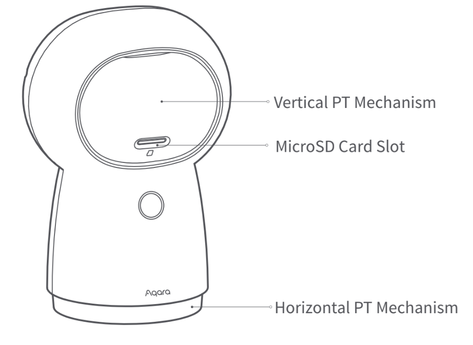
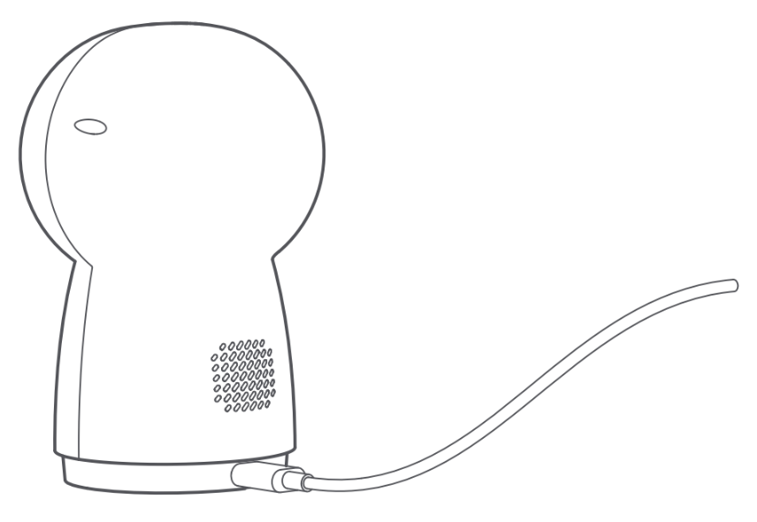

4 스마트 홈카메라 허브 G3
4.1 홈카메라 허브 G3
4.1.1 설치 영상
4.1.2 제품 소개
스마트 허브 G3는 좌우회전 및 상하 각도조절이 가능한 홈 카메라 허브입니다, 2K(1296) 해상도의 선명한 화질은 물론 스마트 허브 기능까지 포함하고 있어 다양한 아카 Zigbee 장치를 연동할 수 있습니다. 내장된 NPU 칩을 통해 안면 인식을 포함한한 다양한 AI 기능을 제공합니다. 또한 추적 및 자동회전 기능을 통해 사람과 개/고양이를 구분하여 추적하거나 설정한 구역을 지속 순환하는 크루즈 감시 모드등을 지원합니다. 또한 적외선 컨트롤 모듈울 탑재하여 에어컨, TV, 등 주변 가전 기긱를 스마트하게 사용하실 수 있습니다. Apple HomeKit 공식 액세서리로 홈킷 보안 비디오를 지원합니다.
제품 전면

버튼 기능:
3초간 길게 누르기: 긴급 푸시 메시지 전송
10초간 길게 누르기: Wi-Fi 네트워크 초기화
10번 빠르게 누르기: 공장 초기화
제품 후면

제품 회전/마이크로 SD 카드 슬롯:

4.1.3 빠른 설정
4.1.3.1 Aqara Home 앱 다운로드
애플 또는 구글 앱스토어에 “Aqara Home”을 검색하거나 아래의 QR코드를 통해 앱을 다운로드 하세요.

4.1.3.2 카메라 전원 공급
동봉된 또는 정확한 규격의 5V 2A 어댑터/충전기를 통해 후면 C타입 포트로 전원을 공급해 주세요. 전원이 공급이 되면 즉시 노란색 지식등이 표시되고 잠시 후 준비가 완료되면 노란색 지시등이 깜빡이며 연결 대기 상태로 진입합니다.

- 만약 지시등이 노란색이 아니거나 깜빡이지 않는다면, 버튼을 빠르게 10회 눌러 공장 초기화를 진행 할 수 있습니다.
4.1.3.3 장치 추가
4.1.3.3.1 Aqara Home앱에 연결하기
아카라 홈 앱을 열고 우측 상단의 ‘+’ 장치 추가를 선택한 후 “스마트 허브 G3”를 선택해 주세요. 앱의 안내에 딸 허브를 추가해 주세요. 성공적으로 연결되는 경우 지시등이 파란색으로 변경됩니다. 연결에 ㅅㄹ패하는 경우 아내 내용을 참고하여 다시 시도해 주세요.
Wi-Fi 이름 또는 암호에는 @,#,%,-,$와 같은 특수 문자를 지원하지 않습니다. 일반 문자로 변경한 후 다시 시도해 주세요.
카메라가 스마트폰에서 생성된 QR코드를 인식하지 못하는 경우 화면 크기가 4.7인치 이상인지 확인하고, 백라이트 기능이 켜져 있지 않은지 확인해 주세요.
공유기에 Wi-Fi 무단 사용 방지 기능이 켜져 있다면 이를 끄고 시도하세요.
공유기의 AP 격리 기능으로 인해 스마트폰이 LAN 내부에서 디바이스를 찾을 수 없는지 확인하세요.
4.1.3.3.2 Apple Home에 연결하기
애플 홈 앱을 열고 우측 상단의 ‘+’-’액세서리 추가’를 선택한 후 설정 코드를 스캔하거나 직접 코드를 입력하여 장치를 추가해 주세요. 홈킷 연결에 실패하는 경우 아래의 내용을 참고하여 다시 시도해 주세요.
4.1.3.3.3 홈킷 연결 실패 시 조치 사항
“액세서리를 추가할 수 없음” 메시지는 iOS 시스템에 캐시가 남아 있는 경우 발생할 수 있습니다. iOS 기기를 재부팅 하고 카메라를 초기화 한 뒤 다시 시도해 주세요.
“액세서리가 이미 추가되어 있음” 메시지가 표시된 경우 애플 홈 앱에서 장치가 삭제되어 있는지 확인해 주세요. 이후 iOS 기기를 재부팅 하고 카메라를 초기화하고 다시 시도해 주세요.
“액세서리를 찾을 수 없음” 메시지가 표시된 경우 카메라를 리셋하고 3분간 대기 후 수동으로 홈킷 코드를 입력해 주세요.
4.1.3.4 하위 장치 추가
카메라 허브를 성공적으로 설치한 후 앱이나 하위 장치의 메뉴얼을 참고하여 하위 장치를 허브에 등록해 주세요.
4.1.4 제품 설치
4.1.4.1 해당 장치에는 브라켓을 설치 할 수 있는 1/4인치 규격의 스크류 소켓이 있습니다. 벽면 또는 천장에 설치하는 경우하는 경우 적합한 브라켓을 이용하여 설치해 주세요.(브라켓은 별도 구매가 필요합니다.)
4.1.4.2 제품을 설치하기 전에 카메라 허브가 앱에 정상적으로 등록되었는지 반드시 확인해 주세요,
4.1.4.3 책상, 식탁,책장 등 카메라를 올려 둘 수 있는 수평 공간에 올려두고 사용할 수 있습니다.
4.1.4.4 카메라의 설치 위치 및 방향에 따라 화면 반전이 필요할 수 있습니다. 해당 경우에는 Aqara Home앱에서 설정해 주세요.
Wi-Fi 네크워크 영역 내에 카메라를 설치해야 합니다.
강력한 자기를 띄거나 전파를 방해하는 물체 주변에 설치하지 마세요.
강한 직사 광선이 렌즈에 가해지는 것을 피해 주세요.
장치 주변에 기타 장애물이 없도록 해 주세요.
해당 장치는 실내용으로 설계되었습니다.

스마트 허브 G3는 다양한 방법으로 설치하여 사용하실 수 있습니다. 브라켓을 이용하여 설치하는 경우에는 설치 가이드를 참고하여 안전하게 설치해 주세요, (브라켓 별매)
4.1.5 지시등 상태 설명
| 지시등 상태 | 장치 상태 |
|---|---|
| 노란불 켜저 있음 | 기기 켜지는 중 |
| 노란불 빠르게 깜빡임 | 네트워크 연결 대기 중 |
| 파란불 빠르게 깜빡임 | 네트워크 연결 중 |
| 파란불 천천히 깜빡임 | 네트워크 연결 완료 및 계정 연결 중 |
| 파란불 켜져 있음 | 정상 작동 중 |
| 빨간불 켜져 있음 | 영상 스트리밍 중 (애플 홈킷 녹화 중) |
| 하얀불 켜져 있음 | 장치가 켜진 상태에서 10분 이상 어떠한 네트워크에도 연결되지 않음 |
| 보라색불 천천히 깜빡임 | 하위 장치 추가 준비 |
| 노란불 천천히 깜빡임 | 펌웨어 업데이트 중 |
| 지시등 꺼짐 | 지시등 끄기가 설정된 상태 / 프라이버시 모드가 설정된 상태/전원이 연결되지 않은 상태 |
4.1.6 제품 사양
모델명: CH-H03
비디오 인코딩: H.264 해상도: 2K(2304x1296p)
입력전압: 5V / 2A
시야각: 100’
총 전력 소비량: 10W(최대)
제품크기: 123.4 X 85.1 X 67.8 mm
작동온도: -10’C ~ 40’C
팬/틸트 각도: 수평 340’, 수직 45’ (위로 30’,아래로 15’)
무선 연결 프로토콜: Wi-Fi IEEE 802.11b/g/n/a/ac 2.4/5GHz, Zigbee 3.0
로컬 스토리지: MicroSD 카드(CLASS 4이상, 최대 128GB 지원)
4.1.7 안내 사항
Works with Apple로고의 사용은 이 제품이 로고에 표시된 기술과 연동하여 사용할 수 있도록 디자인 되었다는 것을 의미하며, Apple의 성능 기준에 부합함을 인정 받았다는 것을 의미합니다. Apple은 해당 제품에 대한 사용이나 이에 적합한 안전 기준에 책임을 지지 않습니다. 스마트 허브 G3를 통해 녹화한 영상 데이터는 최대 10일까지 iCloud에 저장되면 iPhone,iPad, 또는Mac의 애플 홈 앱에서 확인할 수 있습니다. 등록 가능한 카메라 수는 iCloud+ 플랜에 따라 변경됩니다. 녹화한 영상 데이터는 iCloud저장 용량에 포함되지 않습니다. 스마트 허브 G3와 iPhone, iPad, Apple Watch, Homepod, Mac등의 Apple 기기와의 통신에는 HomeKit 보안 기술이 적용됩니다.
4.1.8 주의 사항
본 제품은 어린이가 사용할 경우 위험할 수 있으므로, 어린이의 손이 닿지 않는 곳에 두십시오,
본 제품은 실내 사용 용도로 설계되었습니다. 습한 환경이나 실외에서 사용하지 마십시오.
비바람에 노출된 장소, 물이 튀는 곳에 설치하지 마십시오. 물 또는 액체류를 제품에 엎지를 경우 고장, 감전 및 화재의 위험이 있습니다.
본 제품을 열원 부근에 설치하거나 환기가 잘 되지 않는 밀폐된 공간에서 사용하지 마십시오.
본 제품을 임으로 분해, 수리, 개조하지 마십시오. 수리가 필요한 경우 support@aqara.kr로 연락하십시오.
본 제품은 생활의 편리 및 편의성을 개선하기 위한 용도로 적합합니다. 가정, 건물, 창고 또는 다른 장소의 방범 용도로 사용하는 것을 권장하지 않습니다. 사용자가 상기 사용 지침을 따르지 않고 해당 제품을 사용할 경우 발생하는 어떠한 위험 및 재산 손실에도 제조사는 귀책이 없음을 알려 드립니다.
일반적인 사용 환경에서, 본 장치를 인체로부터 20cm 이상 떨어뜨려 사용해 주세요.